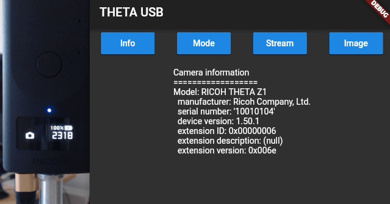
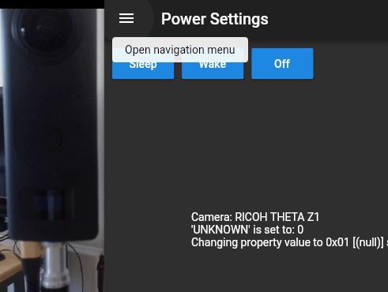
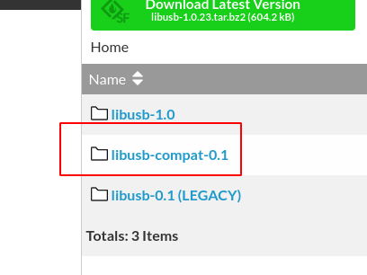
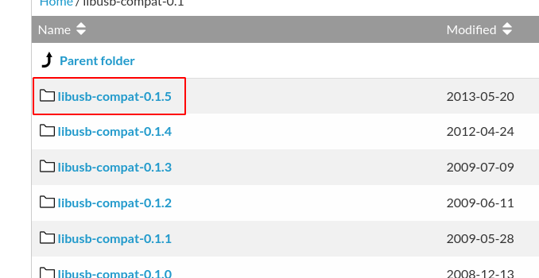
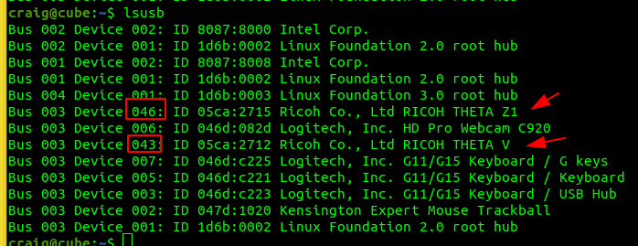
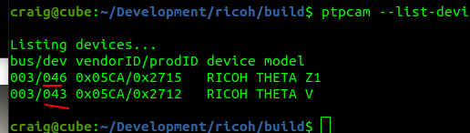

USB API
Overview
RICOH THETA cameras can be controlled and powered indefinitely over a USB cable using the THETA USB API. This is an extension of Media Transfer Protocol (MTP). Any library or application that uses MTP can access the camera.
This document explains the most common applications, libraries and techniques to use the RICOH THETA USB API from Linux.
Advantages
The USB API has the following advantages over the Wi-Fi API:
- wake camera from sleep
- put camera to sleep
- power camer off
- switch to live streaming mode
- switch from live streaming mode to still image or video mode
- theoretical faster transfer speed with USB 3.0 (for the Z1) or USB 2.0 for the V and other models. In actual use, it appears that the USB does transfer faster than Wi-Fi in most cases as there is usually Wi-Fi signal interference or degradation.
- it is possible to use an unsupported workaround to turn the camera on over the USB cable. This technique doesn't use the USB API and is not supported by RICOH. The technique is explained in the camera section.
Hardware and OS
We tested the USB API on the following platforms:
- x86 on Ubuntu 20.04. In the past, we used 18.04, 16.04, and 14.04.
- NVIDIA Jetson Nano with JetPack 4.4 (Ubuntu 18.04). Othere versions of hardware and software should work.
- Raspberry Pi 3 with Raspian 10, buster. Any version and any model should work. Note that the Rasbperry Pi 3 and earlier models cannot stream the THETA over a USB cable.
MTP software
This document covers two different strategies:
- libptp - either as library or with command line ptpcam
- gphoto2 - command line and Python bindings to library
The most common technique is to use the command line program of libptp called ptpcam. You can put ptpcam in a bash shell script or run a system process from the language you are using. For example, in Python, you can use the subprocess module.
In Dart, you can use the Process class. I am using the process_run package.
As a demonstration of the USB API, I put a GUI wrapper around ptpcam using Flutter and Dart.

The next demo shows a common use of putting the camera to sleep and waking it up.

There are several workarounds and fixes that we're using. Feel free to ask questions.
libptp and ptpcam
libptp2 builds on libusb. The latest version is 2-1.2.0, which was last updated on 2016-01-12.
The package builds against an older version of libusb, not the current version that ships with Ubuntu and Raspian. To get around this, you can either install an older version of libusb from source or install libusb-compat-0.1 in addition to libusb-1xx-dev.
Do not install libusb-compat-0.1 and libusb-0.1x on the same system. Certain Linux distributions such as ArchLinux/Manjaro have packages for libusb-compat.
For Ubuntu 20.04 and 18.04 (JetPack 4.4), I was able to build the package with libusb-dev.
For Raspian 10 buster, I used the source code for libusb-compat.
As there are many steps and possible places where you may get stuck feel free to post a question in our forum.
Download libptp source
libptp - Picture Transfer Protocol lib
Get the newest version, which is 2-1.2 right now.

build libptp
$ ./configure
$ make
If you have a build error when compiling libusb, you may need to install the development libraries for libusb.

install libusb-dev
For Ubuntu 18.04, 20.04 on x86 and JetPack 4.4 on Nano.
$ sudo apt install libusb-dev
You may not need this step if you already have the libusb development libraries installed.

Example on x86 Ubuntu 20.04.
$ sudo apt-get install libusb-dev
For Raspberry Pi
Version.
Distributor ID: Raspbian
Description: Raspbian GNU/Linux 10 (buster)
Release: 10
Codename: buster
Get the libusb compatibility layer.


install libptp
$ sudo make install

On x86 Ubuntu 20.04.
$ tar zxvf libptp2-1.2.0.tar.gz
libptp2-1.2.0/
./configure ran with no problems
make ran with no problems
sudo make install ran with no problems
$ pwd
/usr/local/lib
$ ls -l libptp2.*
-rw-r--r-- 1 root root 352640 Aug 31 11:54 libptp2.a
-rwxr-xr-x 1 root root 941 Aug 31 11:54 libptp2.la
lrwxrwxrwx 1 root root 16 Aug 31 11:54 libptp2.so -> libptp2.so.1.1.5
lrwxrwxrwx 1 root root 16 Aug 31 11:54 libptp2.so.1 -> libptp2.so.1.1.5
-rwxr-xr-x 1 root root 249352 Aug 31 11:54 libptp2.so.1.1.5
set /usr/local/lib in library path
The default location of the libptp install is /usr/local/lib.
Make sure that this is in your library path. If it isn't,
add it to a file such as libc.conf in /etc/ld.so.conf/.
$ cd /etc/ld.so.conf.d/
$ ls
$ cat libc.conf

run ldconfig
Load the library configuration.
$ sudo /sbin/ldconfig -v

On x86 Ubuntu 20.04.
$ cd /etc/ld.so.conf.d/
$ l
fakeroot-x86_64-linux-gnu.conf x86_64-linux-gnu.conf
i386-linux-gnu.conf zz_i386-biarch-compat.conf
libc.conf
$ cat libc.conf
# libc default configuration
/usr/local/lib
$ sudo ldconfig
$
Test ptpcam
Connect RICOH THETA to Jetson with a USB cable.
Version of 2-1.2 of libptp has a bug in it. Although ptpcam does take pictures and function normally, you will see an error about capture status.

On x86 Ubuntu.
$ ptpcam --info
Camera information
==================
Model: RICOH THETA Z1
manufacturer: Ricoh Company, Ltd.
serial number: '10010104'
device version: 1.50.1
extension ID: 0x00000006
extension description: (null)
extension version: 0x006e
$ cat /proc/cpuinfo
processor : 0
vendor_id : GenuineIntel
cpu family : 6
model : 60
model name : Intel(R) Pentium(R) CPU G3258 @ 3.20GHz
Fix problem with libptp response
Go to line 77 of ptp.h and change PTP_USB_INT_PACKET_LEN
to 28.

After modification, the code will look like this.

Using USB API with ptpcam (libptp)
test ptpcam response again
Take a still image picture with ptpcam --capture.

Set camera to live streaming mode
Check on camera mode.
$ ptpcam --show-property=0x5013
Set to live streaming mode.
$ ptpcam --set-property=0x5013 --val=0x8005

Using the official
RICOH USB API documentation, you can verify that
0x8005 is live streaming mode. The camera LED should show that
the THETA is in LIVE mode.

In our tests, the RICOH THETA Z1 could charge while streaming over a USB 3.0 port (blue insert).
After hours of streaming, the Z1 LED looks like this.

The response codes are shown below.
0x0001 = single-shot shooting
0x0003 = Interval shooting
0x8002 = Movie shooting
0x8003 = Interval composite shooting
0x8004 = Multi bracket shooting
0x8005 = Live streaming
0x8006 = Interval shooting - tripod stabilizatio is off
(top/bottom correction and stitching optimized)
0x8007 = Interval shooting - tripod stabilization is on
If you set the camera back to still image, single shot mode, you will see this response.
$ ptpcam --set-property=0x5013 --val=0x0001
Camera: RICOH THETA V
'Still Capture Mode' is set to: 0x8005 (-32763)
Changing property value to 0x0001 [(null)] succeeded.
Wake Camera From Sleep
In this test, I have the Z1 power off disabled. I left the camera in sleep mode overnight. When I woke up in the morning, I woke the Z1 up using an ssh session into the Jetson Nano and running this command.
$ ptpcam --set-property=0xD80E --val=0x00
Camera: RICOH THETA Z1
'UNKNOWN' is set to: 1
Changing property value to 0x00 [(null)] succeeded.
I tested the camera with the info command.
$ ptpcam --info
Camera information
==================
Model: RICOH THETA Z1
manufacturer: Ricoh Company, Ltd.
serial number: '10010104'
device version: 1.50.1
extension ID: 0x00000006
extension description: (null)
extension version: 0x006e
In my initial tests, I had to run the info command twice after
I woke the camera up from sleep. The first time, I could not
open the session.
I got this error.
$ ptpcam --info
ERROR: Could not open session!
In the future, I'll run more tests using the camera FunctionalMode to check status.
This is another example with x86. Initially, the camera is asleep.
craig@cube:~$ ptpcam --info
Camera information
==================
ERROR: Could not open session!
craig@cube:~$ ptpcam --info
Camera information
==================
Model: RICOH THETA Z1
manufacturer: Ricoh Company, Ltd.
serial number: '10010104'
device version: 1.50.1
extension ID: 0x00000006
extension description: (null)
extension version: 0x006e
craig@cube:~$ ptpcam --set-property=0xd80e --val=0
Camera: RICOH THETA Z1
'UNKNOWN' is set to: 1
Changing property value to 0 [(null)] succeeded.
At this point, the camera is awake.
Put camera to sleep
$ ptpcam --set-property=0xd80e --val=0x01
Camera: RICOH THETA Z1
'UNKNOWN' is set to: 0
Changing property value to 0x01 [(null)] succeeded.
The camera is asleep.
Auto Power Off Delay
Disable auto power off.
$ ptpcam --set-property=0xd81b=0
Camera: RICOH THETA Z1 'UNKNOWN' is set to: 0
Verify that auto power off is disabled.
$ ptpcam --show-property=0xd81b
Camera: RICOH THETA Z1
'UNKNOWN' is set to: 0
Shutdown Camera
This will completely power off the camera and put into lowest battery mode.
$ ptpcam -R 0x1013
Camera: RICOH THETA Z1
Sending generic request: reqCode=0x1013, params=[0x00000000,0x00000000,0x00000000,0x00000000,0x00000000]
PTP: I/O error
ERROR: Could not close session!
To turn the camera back on, you must disconnect and then reconnect the USB cable of the camera. You can also replicate this process in software.
Put Camera in Still Image Mode
You may want to take a detailed picture of the scene based on triggers from the live stream.
To do this, you need to take the camera out of live streaming mode and put it into still image mode. In the example below, I wrapped ptpcam in a script that explains the hexcode properties of the mode settings. This helps me with testing.
$ ptpcam --set-property=0x5013 --val=0x0001
Camera: RICOH THETA Z1
'Still Capture Mode' is set to: [Normal]
Changing property value to 0x0001 [(null)] succeeded.
0x0001 = single-shot shooting
0x0003 = Interval shooting
0x8002 = Movie shooting
0x8003 = Interval composite shooting
0x8004 = Multi bracket shooting
0x8005 = Live streaming
0x8006 = Interval shooting - tripod stabilizatio is off
(top/bottom correction and stitching optimized)
0x8007 = Interval shooting - tripod stabilization is on
You can verify the mode of with 0x5013.
$ ptpcam --show-property=0x5013
Camera: RICOH THETA Z1
'Still Capture Mode' is set to: [Normal]
Compare this with the result when the camera is in live streaming mode.
$ ptpcam --show-property=0x5013
Camera: RICOH THETA Z1
'Still Capture Mode' is set to: 0x8005 (-32763)
0x0001 = single-shot shooting
0x0003 = Interval shooting
0x8002 = Movie shooting
0x8003 = Interval composite shooting
0x8004 = Multi bracket shooting
0x8005 = Live streaming
0x8006 = Interval shooting - tripod stabilizatio is off
(top/bottom correction and stitching optimized)
0x8007 = Interval shooting - tripod stabilization is on
Start Video Capture
This records video to file.
ptpcam -R 0x101c,0,0,1
Using Raw PTP Commands
Get camera info.
$ ptpcam -R 0x1001
Camera: RICOH THETA Z1
Sending generic request: reqCode=0x1001, params=[0x00000000,0x00000000,0x00000000,0x00000000,0x00000000]
64 00 06 00 00 00 6e 00 00 00 00 33 00 00 00 01 - d.....n....3....
Using Multiple Cameras with ptpcam
Test Environment
- Ubuntu 20.04 on x86
- libptp and ptpcam. compiled from source with patches. v 2-1.2.0 (assuming you have this working. If not please post again)
- Camera with dev id 42 is Z1 with firmware 1.50.1
- camera with dev id 41 is V with fimrware 3.40.1
craig@cube:~$ ptpcam --list-devices
Listing devices...
bus/dev vendorID/prodID device model
003/042 0x05CA/0x036D RICOH THETA Z1
003/041 0x05CA/0x2714 RICOH THETA V
$ ptpcam --dev=042 --info
Camera information
==================
Model: RICOH THETA Z1
manufacturer: Ricoh Company, Ltd.
serial number: '10010104'
device version: 1.50.1
extension ID: 0x00000006
extension description: (null)
extension version: 0x006e
craig@cube:~$ ptpcam --dev=041 --info
Camera information
==================
Model: RICOH THETA V
manufacturer: Ricoh Company, Ltd.
serial number: '00105377'
device version: 3.40.1
extension ID: 0x00000006
extension description: (null)
extension version: 0x006e
craig@cube:~$ ptpcam --dev=041 --capture
Initiating captue...
Object added 0x00000226
Capture completed successfully!
craig@cube:~$ ptpcam --dev=042 --capture
Initiating captue...
Object added 0x00000011
Capture completed successfully!
Slightly more complex, list files:
~$ ptpcam --dev=042 --list-files
Listing files...
Camera: RICOH THETA Z1
Handler: Size: Captured: name:
0x0000000e: 9086912 2019-01-01 08:03 R0010001.JPG
0x0000000f: 7968843 2019-01-01 08:00 R0010002.JPG
0x00000010: 7990763 2019-01-01 08:01 R0010003.JPG
0x00000011: 8008310 2019-01-01 08:03 R0010004.JPG
I have several hundred pictures on the V, but it showed it.
$ ptpcam --dev=041 --list-files
Listing files...
Camera: RICOH THETA V
Handler: Size: Captured: name:
0x00000142: 4152882 2020-06-17 20:59 R0010273.JPG
0x00000143: 3979605 2020-06-17 21:03 R0010274.JPG
0x00000147: 4413502 2020-06-17 21:43 R0010277.JPG
...
Test with Two Cameras in Streaming
$ ptpcam --dev=041 --set-property=0x5013 --val=0x8005
Camera: RICOH THETA V (bus 0, dev 41)
'Still Capture Mode' is set to: [Normal]
Changing property value to 0x8005 [(null)] succeeded.
craig@cube:~$
$ ptpcam --dev=042 --set-property=0x5013 --val=0x8005
Camera: RICOH THETA Z1 (bus 0, dev 42)
'Still Capture Mode' is set to: [Normal]
Changing property value to 0x8005 [(null)] succeeded.
At this stage, I now have two cameras streaming into the same devices. I need to do more tests to manipulate both streams.
however, if your application is handing the stream and image processing already, then you should be good to go.
Other Ways to Grab Device ID
You can also grab the device ID with lsusb or libusb.

Compare the device IDs to ptpcam --list-devices. The IDs should be the same.

gphoto2
Command Line
Fixing Command Line Error - Could not claim the USB device
You may get this error.
$ gphoto2 --capture-image
*** Error ***
An error occurred in the io-library ('Could not claim the USB device'): Could not claim interface 0 (Device or resource busy). Make sure no other program (gvfs-gphoto2-volume-monitor) or kernel module (such as sdc2xx, stv680, spca50x) is using the device and you have read/write access to the device.
ERROR: Could not capture image.
ERROR: Could not capture.
*** Error (-53: 'Could not claim the USB device') ***
Fix for current session is to kill gvfs-gphoto2-volume-monitor and gvfsd-gphoto2 spawner.
$ ps aux |grep gvfs
...
craig 2422 0.0 0.0 442504 13528 ? Sl 08:19 0:00 /usr/libexec/gvfsd-gphoto2 --spawner :1.3 /org/gtk/gvfs/exec_spaw/1
...
craig 1969 0.0 0.0 249860 10032 ? Ssl 08:19 0:00 /usr/libexec/gvfs-gphoto2-volume-monitor
...
$ kill 2422
$ kill 1969
$ gphoto2 --capture-image
New file is in location /store_00020001/DCIM/100RICOH/R0010376.JPG on the camera
$
Removing gvfs-backend permanently
If you don't mount the THETA as a storage device with gphoto, you can remove gvfs-backend. This is a workaround for the conflict when you use gphoto2 from the command line to talk to the THETA.
$ sudo apt remove gvfs-backends
[sudo] password for craig:
Reading package lists... Done
Building dependency tree
Reboot to test.
After reboot.
$ gphoto2 -l
There is 1 folder in folder '/'.
- store_00020001
There is 1 folder in folder '/store_00020001'.
- DCIM
There are 2 folders in folder '/store_00020001/DCIM'.
- 100RICOH
- SingleLensShooting
There is 1 folder in folder '/store_00020001/DCIM/100RICOH'.
- HDR07-22_18-13
There are 0 folders in folder '/store_00020001/DCIM/100RICOH/HDR07-22_18-13'.
There are 0 folders in folder '/store_00020001/DCIM/SingleLensShooting'.
It works!
Check Camera Mode (still image, video, streaming)
StillCaptureMode API reference
$ gphoto2 --get-config=5013
Label: Still Capture Mode
Readonly: 0
Type: MENU
Current: 1
Choice: 0 1
Choice: 1 3
Choice: 2 32770
Choice: 3 32771
Choice: 4 32772
Choice: 5 32773
Choice: 6 32774
Choice: 7 32775
END
craig@craig-desktop:~$
set to video mode
Using the API reference, we can see that video mode is hex 0x8002 or 32770 in base 10.
$ gphoto2 --set-config=5013=32770
start video
$ gphoto2 --set-config movie=1
stop video
this tip contributed by hugues
$ gphoto2 --set-config=/main/actions/opcode=0x1018,0xFFFFFFFF
start video and stop after specified time
$ gphoto2 --set-config movie=1 --wait-event=2s --set-config movie=0
Python bindings
From community member mhenrie
"""
USB api for added performance over http
Theta api reference:
https://developers.theta360.com/en/docs/v2/usb_reference/
Unable to get mtp or ptp to connect to the camera; After some pain was able to get gphoto2 working
"""
import os
import time
import gphoto2 as gp
# Properties
SHUTTER_SPEED = 'd00f'
EXPOSURE_INDEX = '500f'
F_NUMBER = '5007'
AUDIO_VOLUME = '502c'
COLOR_TEMPERATURE = 'd813'
EXPOSURE_PROGRAM_MODE = '500e'
# milliseconds
TIMEOUT = 10
TIMEOUT_CAPTURE_DNG = 10000
def wait_for_event(camera, timeout=TIMEOUT, event_type=gp.GP_EVENT_TIMEOUT):
"""
Wait for event_type to to be triggered.
:param camera:
:param timeout:
:param event_type:
:return: event_data
"""
while True:
_event_type, event_data = camera.wait_for_event(timeout)
if _event_type == gp.GP_EVENT_TIMEOUT:
return
if _event_type == event_type:
return event_data
def set_config_by_index(config, index):
"""Set config using choice index"""
value = config.get_choice(index)
config.set_value(value)
return config
# def list_files(camera, path='/'):
# result = []
# # get files
# for name, value in camera.folder_list_files(path):
# result.append(os.path.join(path, name))
# # read folders
# folders = []
# for name, value in camera.folder_list_folders(path):
# folders.append(name)
# # recurse over subfolders
# for name in folders:
# result.extend(list_files(camera, os.path.join(path, name)))
# return result
#
#
# def get_file_info(camera, path):
# folder, name = os.path.split(path)
# return camera.file_get_info(folder, name)
class CameraUsb(object):
"""
Define API for multiple exposure
"""
def __init__(self, verbose=False):
self.verbose = verbose
self.camera = gp.Camera()
self.camera_config = None
self.status_config = None
self.other_config = None
self.shutter_speed_config = None
self.shutter_speed_options = []
def init(self):
"""
Set manual exposure and other defaults
:return: config
"""
try:
self.camera_config = self.camera.get_config()
except gp.GPhoto2Error:
raise RuntimeError("Unable to connect to Camera")
self.other_config = self.camera_config.get_child_by_name('other')
# Manual/f-stop/iso
exposure_program_mode = self.other_config.get_child_by_name(EXPOSURE_PROGRAM_MODE)
if not exposure_program_mode.get_value() == '1':
print('Setting camera to Manual exposure program')
exposure_program_mode.set_value('1')
self.camera.set_config(self.camera_config)
wait_for_event(self.camera)
# When switching exposure program, we need to refresh the configs
self.camera_config = self.camera.get_config()
self.other_config = self.camera_config.get_child_by_name('other')
self.status_config = self.camera_config.get_child_by_name('status')
self.shutter_speed_config = self.other_config.get_child_by_name(SHUTTER_SPEED)
self.shutter_speed_options = [str(x) for x in self.shutter_speed_config.get_choices()]
if len(self.shutter_speed_options) != 61:
raise RuntimeError('Unble to determine shutter speed options; restart app')
fstop = self.other_config.get_child_by_name(F_NUMBER)
fstop.set_value('560')
iso = self.other_config.get_child_by_name(EXPOSURE_INDEX)
iso.set_value('80')
self.camera.set_config(self.camera_config)
wait_for_event(self.camera)
def get_info(self):
"""
:return: Dict containing serialnumber, batterylevel, remainingpictures, etc
"""
if not self.camera_config:
self.init()
battery_level = self.status_config.get_child_by_name('batterylevel').get_value()
# Convert '67%' to int
battery_level = int(''.join([x for x in battery_level if x.isdigit()]))
info = {'serialnumber': self.status_config.get_child_by_name('serialnumber').get_value(),
'cameramodel': self.status_config.get_child_by_name('cameramodel').get_value(),
'deviceversion': self.status_config.get_child_by_name('deviceversion').get_value(),
'batterylevel': battery_level,
'remainingpictures': int(self.camera.get_storageinfo()[0].freeimages)}
return info
def take_picture(self, shutter_speed_index=None, color_temperature=None, volume=None):
"""
Set camera options and take picture
Blocking
:param shutter_speed_index: int in range 0-60 (0 fastest shutter)
:param color_temperature: in in range 2500-10000 by 100 increment
:param volume: int in range 0-100
:return: (jpg_path, dng_path)
"""
t1 = time.time()
if not self.camera_config:
self.init()
if shutter_speed_index is not None:
self.shutter_speed_config.set_value(self.shutter_speed_options[shutter_speed_index])
if color_temperature is not None:
self.other_config.get_child_by_name(COLOR_TEMPERATURE).set_value(color_temperature)
if volume is not None:
self.other_config.get_child_by_name(AUDIO_VOLUME).set_value(str(volume))
self.camera.set_config(self.camera_config)
# We need this even though no event is triggered
wait_for_event(self.camera)
gp_jpg_path = self.camera.capture(gp.GP_CAPTURE_IMAGE)
gp_dng_path = wait_for_event(self.camera, timeout=TIMEOUT_CAPTURE_DNG, event_type=gp.GP_EVENT_FILE_ADDED)
if not gp_dng_path:
raise RuntimeError('Unable to copy DNG')
jpg_path = os.path.join(gp_jpg_path.folder, gp_jpg_path.name)
dng_path = os.path.join(gp_dng_path.folder, gp_dng_path.name)
print('Capture took %0.03f sec' % (time.time() - t1, ))
return jpg_path, dng_path
def download_file(self, src_path, dst_path, delete=True):
"""Copy the file from the camera src_path to local dst_path"""
t1 = time.time()
src_folder, src_name = os.path.split(src_path)
src_file = self.camera.file_get(src_folder, src_name, gp.GP_FILE_TYPE_NORMAL)
print('Download %s ->\n\t%s' % (src_path, dst_path))
src_file.save(dst_path)
wait_for_event(self.camera)
print('Download took %0.03f sec' % (time.time() - t1, ))
if delete:
t1 = time.time()
print('Delete %s' % src_path)
self.camera.file_delete(src_folder, src_name)
wait_for_event(self.camera)
print('Delete took %0.03f sec' % (time.time() - t1, ))
def _unittest():
"""test a short exposure sequence"""
# temporary directory
dst_template = '/tmp/theta/capture.%04d.%s'
t1 = time.time()
camera = CameraUsb()
camera.init()
print(camera.get_info())
frame = 1
jpg_path, dng_path = camera.take_picture(0)
print(jpg_path, dng_path)
camera.download_file(dng_path, dst_template % (frame, 'dng'))
frame += 1
jpg_path, dng_path = camera.take_picture(24)
print(jpg_path, dng_path)
camera.download_file(dng_path, dst_template % (frame, 'dng'))
frame += 1
jpg_path, dng_path = camera.take_picture(42)
print(jpg_path, dng_path)
camera.download_file(dng_path, dst_template % (frame, 'dng'))
frame += 1
print('Done in %0.03f sec' % (time.time() - t1, ))
if __name__ == "__main__":
_unittest()